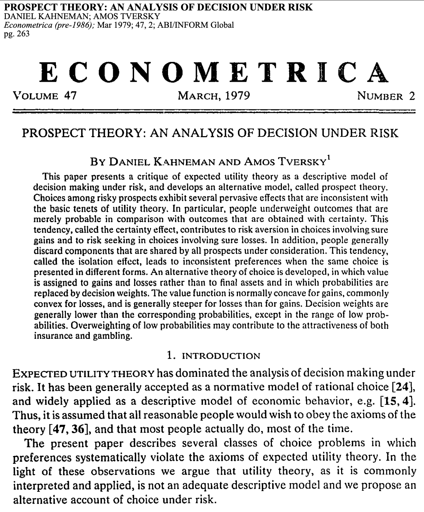
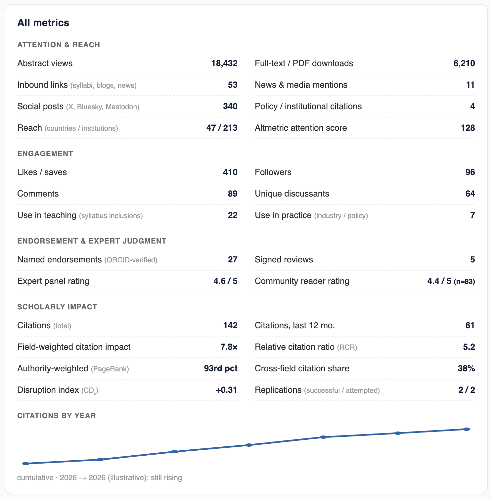
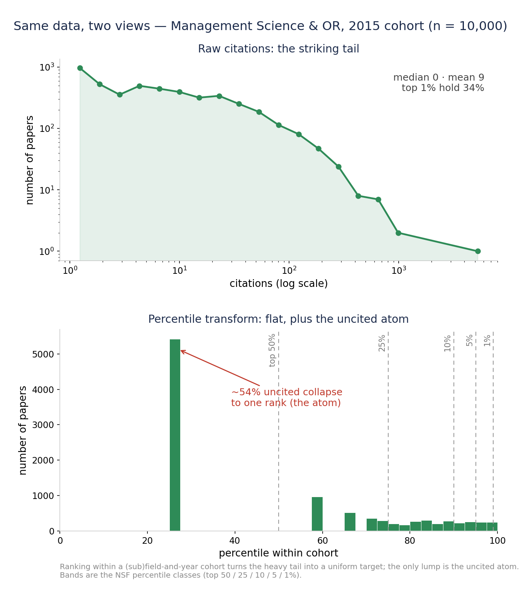
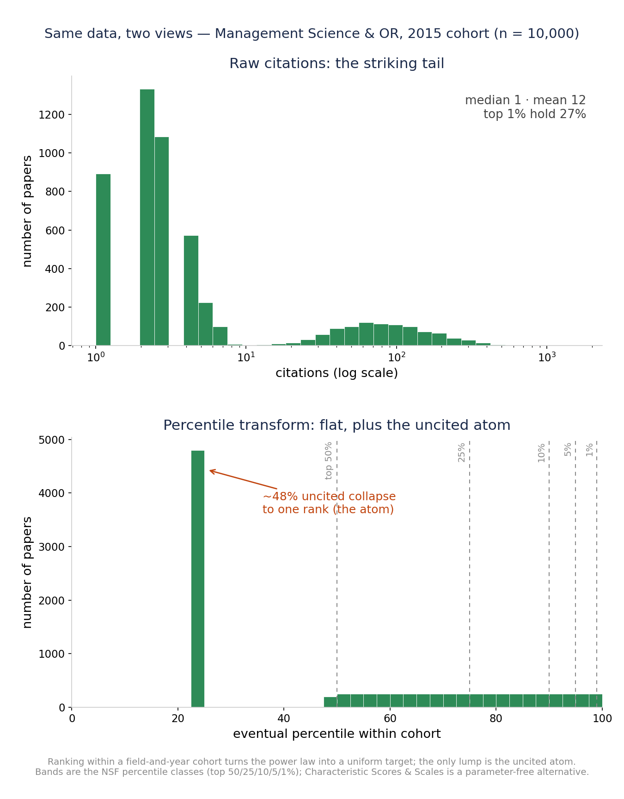
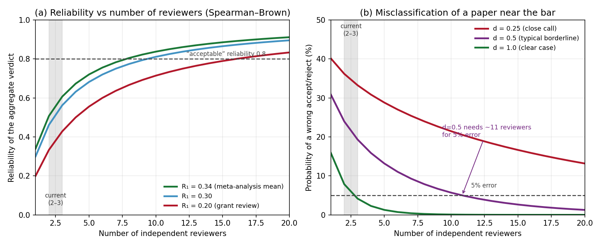
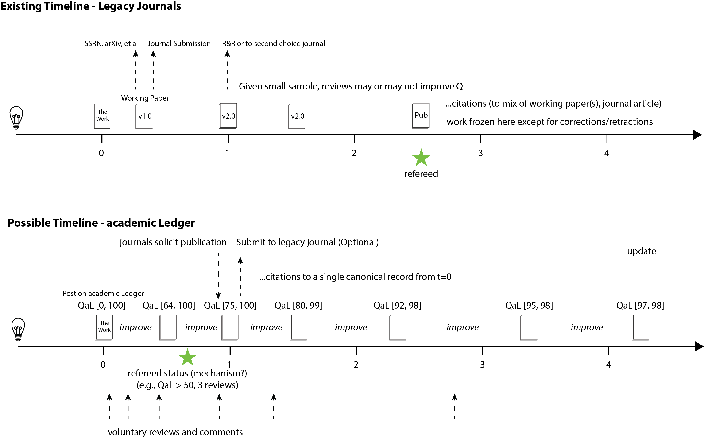
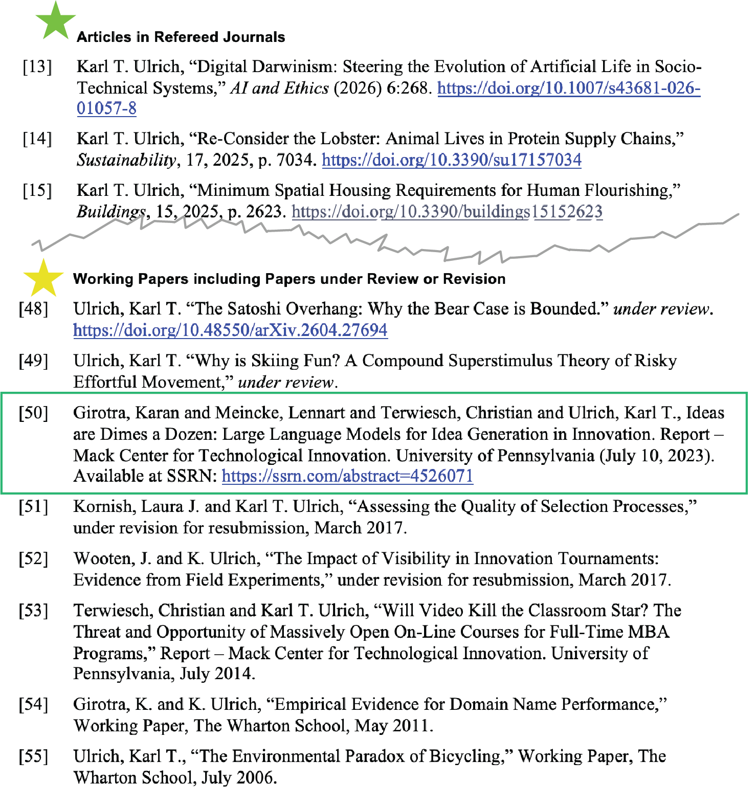
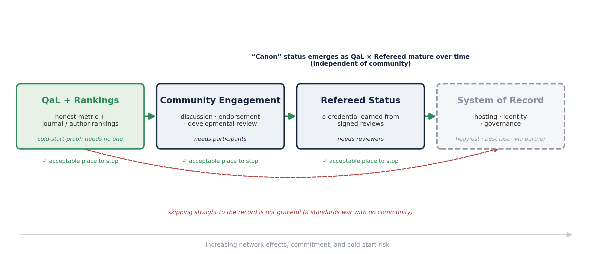
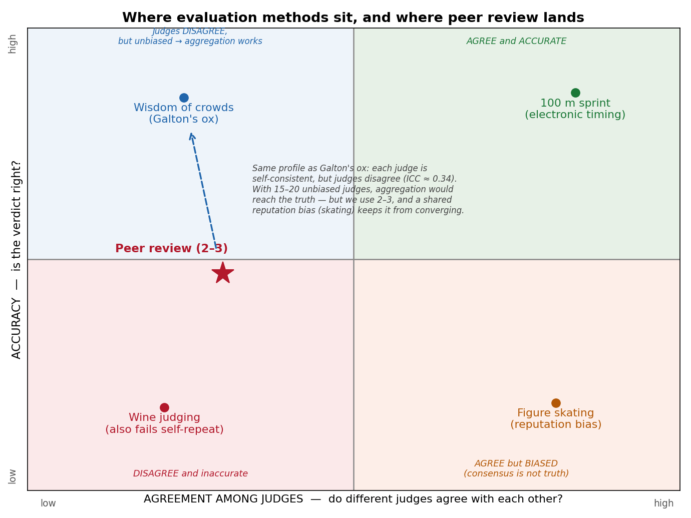

Symptoms, Diagnoses, and a Potential Solution Concept
Karl T. Ulrich
(Joint work with Gérard Cachon and Christian Terwiesch)
July 9, 2026 · OID Department Seminar · The Wharton School
Published Articles are the Coin of the Realm
Unit of work in academia
Vary widely in embodied effort
"Refereed" journal an important categorization
" 'A' journal" is the most important categorization
"Quality" matters, but assessing quality is tricky

What We Mean by Quality
Many dimensions of quality: interestingness, importance, impact, novelty, elegance, humor, clarity, rigor, popularity, methodological purity, and so on
For simplicity, we collapse them to a single scalar Q, the eventual recognized value of the work; correctness and importance are inputs to Q, not separately certified axes
Ex ante uncertainty about Q is high
Review effort narrows that uncertainty only modestly, and possibly mostly on the dimension of correctness; time reveals most of it, particularly on the importance dimension
Many Available Metrics for Q; Authority-Weighted Citations ("PageRank") Likely Pretty Good
Estimate Q from realized impact: the percentile, within field and vintage, of citation count — excluding self-citations (or authority-weighted citations, essentially PageRank)
A confidence interval for Q begins at [0, 100]; one citation moves it to about [50, 100]; with enough evidence it narrows, e.g., [82, 84]
In theory could estimate Q from a wealth of independent signals, and they accrue over time
The more independent the signals, the less the estimate of Q can be gamed

The Distribution of Q Is Heavy-Tailed (and the Mode is 0)
Quality Q, proxied by citation-based impact.

Management Science & OR, OpenAlex (all journals), published 2015, cited through 2026; n=10,000. ~48% uncited, median 1, yet the top 1% hold 27% of all citations. Psychology is essentially identical (median 0, ~53% uncited, σ≈1.5, top 1%≈26%): citation distributions are universal across fields.
Raw citation counts are heavy-tailed and hard to compare across fields and years
Transform each paper to its percentile within its own (sub)field and publication year
Report membership in standard classes: top 1%, 5%, 10%, 25%, 50%
These are the NSF / Leiden percentile classes, a standard in research evaluation
About half of all papers sit at or near zero citations: an atom at the bottom
A percentile is intuitive, field-fair, and robust to the tail.

Percentile classes: National Science Board, Science & Engineering Indicators (NSB-2025-7); CWTS Leiden Ranking. Parameter-free alternative: Glänzel & Schubert (1988), "Characteristic Scores and Scales in Assessing Citation Impact," Journal of Information Science 14(2):123–127.
The Societal Functions of Publishing
Administration: time stamp, copy edit, typeset, archive, distribute
Development: peer feedback and guidance for revision
Promotion: communicating existence to the relevant audience
Certification of quality: branding the work as a signal of quality
Historically, Journals Performed All of these Functions
Most functions (except development) were completed nearly simultaneously, around the time of "publication"
Today the functions are increasingly unbundled (SSRN, arXiv, personal sites, social media, DIY publication-quality document prep, LLM copy editing)
Administration is now largely irrelevant (PDF downloads, SSRN, open access)
The functions of scholarly communication were canonically identified as registration, certification, awareness, and archiving by Roosendaal & Geurts (1997), "Forces and Functions in Scientific Communication"; the case for unbundling (decoupling) them into independent services was made by Priem & Hemminger (2012), Frontiers in Computational Neuroscience 6:19.
The one thing Journals purport to still do (certification of quality) can't really be done, for two reasons
1. The instrument is noisy
Inter-rater reliability is low: 2–3 reviewers give a verdict little better than a guess
Reliability rises only slowly with more judges; you would need >10 to dependably classify a marginal paper
Fixable in principle: add judges (Spearman–Brown)
2. The target is mostly exogenous
Even a perfect read on a paper's knowable quality predicts little of its eventual Q
Most of what determines eventual Q (timing, attention, who cites whom) is realized after the decision
Not fixable by any number of judges
Reason 1 limits any small panel. Reason 2 limits any ex ante process, however many reviewers it uses.

A Simple Model, with Evidence for Each Parameter
Eventual quality decomposes into a knowable component plus an exogenous shock; each reviewer sees the knowable component through noise:
Q = q0 + u · si = q0 + ei
Parameter
Value
Evidence
Reviewer noise (reliability of one review)
ICC ≈ 0.34
Bornmann, Mutz & Daniel (2010), PLoS ONE 5(12):e14331 (48 studies, 19,443 manuscripts); Cicchetti (1991), Behavioral & Brain Sciences 14(1):119–186; NeurIPS revisit, ~50% of scoring subjective — Cortes & Lawrence (2021), arXiv:2109.09774
Validity ceiling (knowable quality → eventual Q)
R² ≈ 0.06
Success in cumulative-advantage markets is intrinsically unpredictable — Salganik, Dodds & Watts (2006), Science 311:854–856; review scores do not predict citations of accepted papers — Cortes & Lawrence (2021); impact often realized years later ("sleeping beauties") — Ke, Ferrara, Radicchi & Flammini (2015), PNAS 112(24):7426–7431
q0 = the knowable (ex ante) component of quality; u = the exogenous shock realized after the decision, so eventual quality Q = q0 + u; ei = reviewer error. A review recovers at best q0; even perfectly, it explains only about 6% of Q. Outcomes are binned into the NSF percentile classes; the validity ceiling is sourced from the publishing literature, not from our own idea-evaluation work.
The Result: More Reviewers Barely Help
Probability of correctly identifying
By chance
3 reviewers
10 reviewers
Perfect read of q0
a top 1% paper
1%
3%
4%
4%
a top 10% paper
10%
17%
18%
19%
a top 25% paper
25%
33%
35%
36%
a top 50% paper
50%
56%
57%
58%
Probability a paper that truly belongs in a tier is placed there, under the model above (ICC 0.34; validity ceiling R² 0.06). The last column is a perfect (noise-free) read of q0 — the knowable ex-ante quality defined on the previous slide (Q = q0 + u) — not foreknowledge of the outcome; even then a top-1% paper is tagged only ~4%, because ~94% of impact is exogenous. Going from 3 to 10 reviewers barely moves the numbers: the validity ceiling, not reviewer count, is the binding constraint.
The System has Always been Infuriating; It May Be Getting Worse
Supply is increasing dramatically
LLM use in writing
Co-authorship inflation (no obvious net effect on the number of papers)
Submissions to Organization Science up 42% since ChatGPT (a COVID bump was 20%), almost entirely AI-generated text
Of the most AI-heavy manuscripts (70%+), ~70% are desk-rejected, vs 44% for low-AI
Reviewers increasingly rely on LLMs for referee reports (a "shadow AI review system")
Does not necessarily make the system worse, but we can probably use AI more deliberately
Anecdotally, time to first review is increasing, but variance across journals is very high
Provide reliable, unbiased, hard-to-game evidence of impact
Minimize the time from submission to "reviewed publication" CV status
Allow papers to be "reviewed/published" while minimizing unproductive author effort
Engage the community in discovery, discussion, and constructive feedback
Embrace revision over time with a transparent history and serving the latest version
Exhibit grace towards low-citation papers and authors (the vast majority of the field)
Enable easy discovery, search, and retrieval
Operate in an economically sustainable way
A cursory tour of academic forums (Hacker News, r/AskAcademia, r/professors) turns up every one of these, in far more colorful form. On what the community wants: Mulligan, Hall & Raphael (2013), JASIST 64(1):132–161; Ithaka S+R US Faculty Survey (2021).
The Journal System Could Possibly Be Fixed
We have faced long lead times and Reviewer 2 essentially forever. Not a new problem.
Tightly run journals with committed editors still seem to function reasonably well
"AI will save us" is the optimistic branch, but the evidence is mixed and the prospects are genuinely uncertain
LLMs are useful assistants: on realistic tests they catch only a minority of real or inserted errors, miss broken logic, can be gamed by hidden prompts, and skew lenient. They may get much better.
They are strongest at triaging and improving reviews, weakest at identifying the very best work and at grounded technical verification
A diverse ensemble of LLMs (the "wisdom of crowds" move) may raise the floor cheaply, but the evidence does not yet support replacing human judgment
Still, journals could use LLMs for an initial filter to push net submission rates toward pre-LLM levels
LLMs catch only roughly 20–40% of real or inserted errors and can miss broken logic entirely: Son et al. (2025, SPOT, arXiv:2505.11855); Xi et al. (2025, FLAWS, arXiv:2511.21843); Dycke & Gurevych (2025, arXiv:2508.21422). Useful as assistance: Liang et al. (2024), NEJM AI 1(8). Gameable by hidden prompts: Gibney (2025), Nature 643:887–888. On the ensemble idea: Meincke, Terwiesch & Huchzermeier (working paper).
An Alternative Approach: The Academic Ledger
A neutral, non-profit system of record applies a light integrity screen immediately and enters the work in a ledger, without judging quality
Then evidence of quality accumulates over time, and the branding of quality occurs with some delay, when confidence in the estimate of Q is sufficiently high
Legacy journals co-exist and may remain important for branding and curation around topics, but the Ledger is the source of truth about quality.
Alternatives to conventional journals may emerge, built on top of the Ledger to deliver other benefits (e.g., engagement with a community, improvement of the work, focused curation around topics)

Beta Build of academic Ledger (with QaL)
Built using OpenAlex as the source data.
Estimates QaL for virtually any paper in any field (N ~ 500M)
Basic approach is
Construct a synthetic subfield for any paper
Locate the paper in the synthetic subfield in percentile rank relative to subfield-year cohort.
Provide a 90 percent confidence interval of eventual QaL (calibrated by subfield)
Synthetic subfield is based on recency weighted co-citation neighborhood, or when brand new, by recency weighted subfields of references, by subfields of co-authors, or as fallback by OpenAlex categorization.
Percentile rank in each subfield is exact...an observation. Combined by weighting subfields.
EXAMPLES
DEMO
Designing QaL: Composition and Choices
How it is composed
A blend of robust, article-level, subfield-and-vintage-normalized signals, never a raw count
Value is the paper's percentile within field and publication year (NSF / Leiden classes)
Synthetic subfield constructed with co-citation-neighborhood normalization (Relative Citation Ratio) and subfield-normalized scores (Leiden MNCS)
Authority-weighted citations (PageRank-style), harder to game than raw counts (not yet implemented)
Correctness signals fold in over time: replications, corrections, retractions (not yet implemented)
Reported as a point estimate, a 90% interval, and bucket probabilities, all of which evolve with additional information
Design questions
Transparent or opaque? Transparent method and inputs, auditable and reproducible; opaque metrics breed distrust. Gaming-resistance comes from design, not secrecy: many independent signals, authority-weighting, a percentile basis, and deciding late
Field-normalized how? Within field × vintage, plus article-level co-citation normalization; the reference class is always stated
Proven, robust tools to invoke: percentile classes, field-normalized scores (MNCS), the Relative Citation Ratio, Characteristic Scores and Scales — not the article-level Journal Impact Factor
Responsible-metrics principles: Hicks, Wouters, Waltman, de Rijcke & Rafols (2015), "The Leiden Manifesto for research metrics," Nature 520:429–431; DORA (2013). Article-level normalization: Hutchins, Yuan, Anderson & Santangelo (2016), "Relative Citation Ratio," PLoS Biology 14(9):e1002541; CWTS Leiden Ranking (MNCS); Glänzel & Schubert (1988).
Computing a QaL: A Worked Example
Subfield in the synthetic field
Weight
Pctile
Contribution
Experimental & Cognitive Psychology
24.9%
99.9
24.9
Artificial Intelligence
20.7%
99.8
20.7
Sociology & Political Science
13.1%
100.0
13.1
Health Informatics
11.6%
96.8
11.2
Computer Science Applications
5.7%
99.7
5.7
Economics & Econometrics
5.6%
99.9
5.6
Management Information Systems
4.6%
99.9
4.6
Cognitive Neuroscience
4.2%
99.9
4.2
Information Systems
3.5%
100.0
3.5
Safety Research
3.5%
99.8
3.5
Social Psychology
2.6%
100.0
2.6
Total
100%
99.5
Contribution = weight × percentile; the paper is ranked within each subfield's 2023 cohort.
Ideas are Dimes a Dozen — Girotra, Meincke, Terwiesch & Ulrich (2023); 168 citations.
OpenAlex tags it one subfield (Computer Science Applications). QaL instead ranks it in the synthetic field — the 11 subfields its references and co-citations actually span.
Observed = Σ (weight × percentile) = 99.5
Extrapolate to eventual — it's only 3 years old, so each calibrated subfield maps observed → eventual, blended over the 83% of weight that's calibrated:
QaL 99.8 · 90% CI [97, 100]
a top-0.2% paper — a forecast, not just today's citation count.
The Initial Screen Should be a Low Bar
Entry in the Ledger does not judge quality. It verifies identity and screens out fraud and the obviously wrong, nothing more
Identity is the primary filter: ORCID authentication raises the cost of paper-mill, sock-puppet, and fabricated-author submissions
The automated and LLM screen targets a deliberately narrow set: fabrication, manipulated figures, paper-mill and "tortured phrase" text, fabricated or dead citations, gross statistical inconsistencies, and claims with no support
Much of this is handled by validated rule-based tools (image-duplication, statcheck, tortured-phrase and paper-mill detectors), with LLMs for triage. This is a low bar the evidence can support, unlike judging quality, which it does not attempt
Expected outcome: outright rejection of perhaps 1–5% of ORCID-authenticated submissions
Prefer conditional registration: admit borderline work with an attached, transparent summary of the LLM-generated concerns, and leave judgment to readers and to the later tiers
LLMs cannot yet reliably certify correctness (Son et al. 2025, SPOT; Xi et al. 2025, FLAWS; Dycke & Gurevych 2025) and are gameable (Gibney 2025, Nature 643:887). The screen is therefore scoped to fraud and obvious error, where rule-based tools (statcheck; image-duplication; tortured-phrase and SCIgen detectors) are already effective.
The Legacy Journal Perspective
The Ledger is consistent with the policies of most academic journals in social science
Journals could encourage authors to first publish on the Ledger, reducing their volume of low-quality submissions
The alternative to a hard reject could become "develop the work on the Ledger"
Editors could proactively scan the Ledger for work to invite, evaluating fit and quality based on evidence
How Might we Provide "Refereed" Status with Minimal Friction
"Incidental" voluntary reviews.
(e.g., signed comments from readers who are already interested organically in the work: (a) what did I most like about this paper?, (b) how could the author make this paper better?)
Existing journals could solicit articles from work posted on the Ledger.
Emergent virtual journals with volunteer editorial boards for a very specific topic. (I might actually want to be a reviewer for a Journal of Innovation Processes.)
Automated LLM feedback using best current practices, posted with information on prompt and model.
Conferring Refereed Status
real estate on the CV

Utopia
Administration is smooth and fast: register, screen integrity, archive, timestamp, and disseminate within days
True signals of quality emerge smoothly and continuously as the field reads, uses, cites, and endorses; those signals are used for critical decisions in universities
Authors can respond, adapt, and improve the work, with the revision history on the record
Incentive is to create interesting and impactful work not to fit the norms of a community
Journals become nice-to-have curation; the revealed evidence is what matters for reputation and for evaluating scholarship
A more predictable, less capricious, less arbitrary world for emerging scholars; senior scholars with no patience for journals may opt out of the legacy system and still "publish"
How Is This Not Just SSRN?
SSRN is a for-profit organization, owned by Elsevier (a journal publisher), with conflicted incentives
SSRN is a posting service, not a system of record
SSRN, despite offering its own branded metric (PlumX), deliberately avoids an honest estimate of Q
It confers no credential that "counts," its download metrics have been gameable, and are reported only as a running cumulative total
The Ledger adds what SSRN lacks: neutral non-profit governance, an identity and integrity layer, signed review, "refereed" status, and an evidence-based estimate of Q in percentile terms
Could an Incumbent Implement the Ledger?
An incumbent doing this well would be a win, not a loss. The aim is the system of record with a credible estimate of Q, by whatever means best realizes the goals.
What a record requires: neutral, non-commercial governance, permanence, coverage of all fields, an identity and integrity layer.
Barriers for anyone: the cold start (authors and endorsers together); recognition still locked to journal names and the impact factor; cross-field scope; durable funding; each incumbent's own inertia.
Player
Strengths as a record
Weaknesses / risk
arXiv (independent non-profit, from Jul 2026)
Neutral, trusted, built to last; already spans physics to economics
Identity tied to physics/math/CS; no endorsement, curation, or metrics layer
SSRN (for-profit; Elsevier, 2016)
Deep social-science adoption and author base
Owned by a journal publisher; conflicted; wrong steward for a neutral record
bioRxiv / medRxiv (openRxiv, non-profit, 2025)
Strong governance, fast growth, well funded (CZI)
Life and health sciences only
eLife (non-profit journal)
Already layers signed review on preprints (our Refereed idea)
A journal, life-science scope; lost its impact factor when Clarivate balked
Big publishers (Elsevier, Springer Nature, Clarivate)
Scale, money, distribution
Most conflicted; their economics oppose decoupling
Adjacent pieces exist but none certify or curate: OpenAlex, Crossref, ORCID (non-profit data and identity); Google Scholar, Semantic Scholar (discovery); ResearchGate (for-profit network).
Cold Start and Graceful Evolution

Four non-overlapping feature sets, drawn as states. QaL + Rankings is cold-start-proof and bootstraps the rest; Community Engagement supplies the reviews that earn Refereed Status; the System of Record is heaviest and comes last. Each of the first three is an acceptable place to stop, so the system stays additive to SSRN, arXiv, and journals and degrades gracefully. Canon is not a separate set: it emerges as QaL and Refereed mature.
Open Questions
Does the system require radical change, or could the incumbents address the pain points?
Could an institution host the Ledger (e.g., "academic Ledger is hosted by the Wharton School of the University of Pennsylvania")?
What is the unit of work? (papers, books, videos, other) Should we care?
What resources are required to operate the Ledger at scale?
What business models might work?
OTHER STUFF
Three Sequential Categories of Papers: Certified, Refereed, Canon
Certified. Authenticated by ORCID (the primary filter) and screened by automated tools and LLMs for fraud and obvious defects, not correctness, then archived, timestamped, and public within days. A floor against fraud and the obviously wrong, not a claim about quality. Fast and near-automatic; perhaps 1–5% are rejected.
Refereed. Has earned named, signed reviews or endorsements from identified scholars above a published threshold. The tier that honestly merits the classification "peer reviewed," but in the open and on the record. Perhaps the standard is 90% confidence that the paper will eventually reach the 75th percentile of submissions.
Canon. The curated, time-earned best, conferred from realized impact (use, citation, replication, discussion) and signed endorsements, by field panels under published criteria. Quality judged after the fact from evidence, not predicted. Perhaps approximately the 95th percentile of papers. Because it rests on evidence rather than a noisy verdict from two or three reviewers, it should in theory be more valuable than journal acceptance.
Published. Optional nice-to-have curation via publication in a journal. Publication could, but need not, follow from the evidence.
One record: a CV line begins as Certified and is upgraded in place to Refereed, then Canon, as review and impact accrue. A credential that only appreciates.
The Same Paper, Several Ways
[Certified] Cachon, G., C. Terwiesch, and K. Ulrich. 2026. The Crisis in Academic Publishing. Academic Ledger [0, 100]. https://doi.org/10.59312/aldg.2026.0427
[Refereed] Cachon, G., C. Terwiesch, and K. Ulrich. 2026. The Crisis in Academic Publishing. Academic Ledger [75, 100]. https://doi.org/10.59312/aldg.2026.0427
[Canon] Cachon, G., C. Terwiesch, and K. Ulrich. 2026. The Crisis in Academic Publishing. Academic Ledger [95, 100]. https://doi.org/10.59312/aldg.2026.0427
[Canon] Ⓟ Cachon, G., C. Terwiesch, and K. Ulrich. 2026. The Crisis in Academic Publishing. Academic Ledger. (also appears in Quantitative Science Studies 7(2):512–540, 2026). https://doi.org/10.59312/aldg.2026.0427
One record, one DOI, one act of authorship: the line is upgraded in place; the circled P flags the journal-published version, with its citation appended.
What the Paper Record Looks Like on academic Ledger
A paper's home on the Ledger: tier status, the journal-published flag, and impact that accrues over time. Open the live page: academicledger.vercel.app/paper.html
Wine, the 100m Dash, Galton's Ox, and Figure Skating

Modest Success ("SSRN/arXiv+")
A realistic near-term target: a system of record, plus…
An automated fraud and integrity screen (a low bar, not full correctness) and certification
Community engagement, discussion, and endorsements
A comprehensive set of impact metrics
An estimate of Q in percentile terms, e.g., a 90% confidence interval [83, 90]
A designation of "refereed" that allows the work to "count"
The Cold-Start Problem
Posting on the Ledger is no-regrets for all authors
A founding board (N ≈ 100) commits to (a) posting their work and (b) providing N endorsements
Leading journals add language to their instructions to authors
Institutional authority lends credibility (Wharton, INFORMS, and so on)
To start, all existing work could be scraped, indexed, analyzed, and reformatted
Sketch of a Model for Establishing System Parameters
Eating our own dogfood: can a model usefully inform this system?
A scalar quality Q with a heavy-tailed distribution (most value sits in the tail)
A low-bar integrity gate at entry, then estimation of Q from accumulating evidence; the real decision is when to certify each tier
Targets a chosen level of false negatives and false positives, under a validity ceiling on early prediction
A two-dimensional (C, I) treatment is a useful extension we keep as a branch